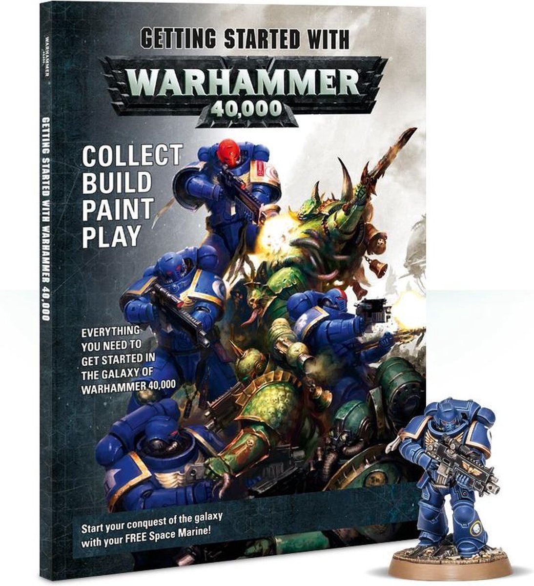

hoe begin je

mini's
Verzamel je mini's pak de codex erbij en zie hoeveel punten elke mini waard is. De standaard punten limiet is 400. Stem ze daarop af.
missie
Bijna elke codex komt met een aantal missies dat je kan aangaan. Dit zijn de objecten van het spel dit kan gaan van "capture the flag" tot "domination" waar je al de vijandige mini's van het veld moet halen.
slagveld
Zet een slagveld op, dit is standaard 4inch op 6inch. Je kan velden aanwerven of zelf maken.
deploy
Aan elke kant van het veld zal de speler hun leger opzetten en een set van reserves opzij zetten.
Deze zullen in het spel komen wanneer er plaats vrij is.
beurtrol
Om te zien wie er eerst gaat rol je met een d6. De persoon die het hoogste gooit gaat eerst en zal beginnen.
speel de missie
Je eerste keer is verwarrend hou de codex naast je en neem je tijd. Begin het liefst met "domination" sinds dit niet te ingewikkeld is.
overwinning
Als je met een missie speelt dan moet je zien wanneer je wint. Je hebt pas gewonnen wanneer je het zelf uitroept dus let er goed op.